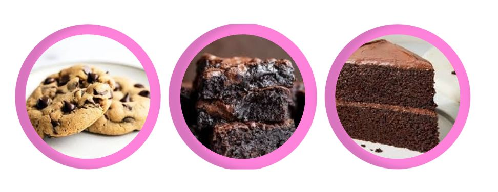

Chocolate Chip Cookies
Brownies
Chocolate Cake

Welcome to Taste Without Limits.
This site is to help you create delicious, allergen-free treats without any stress.
Taste Without Limits is perfect if are the following:
Dairy Free
Vegan
Gluten free